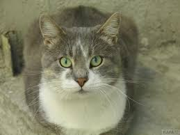
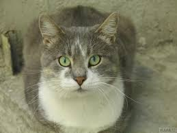
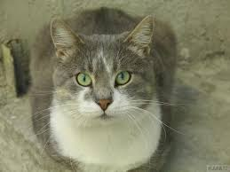
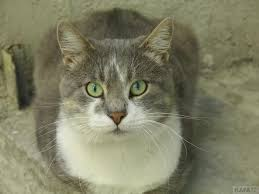

Сэмюэль Л. Джексон, Ченнинг Татум, Дженнифер Джейсон Ли, Курт Рассел в вестерне Квентина Тарантино «Омерзительная восьмерка». США, прошло несколько лет после окончания Гражданской войны. Охотник за головами пленил опасную преступницу, заочно приговоренную к смертной казни. Теперь он сопровождает ее в полузаброшенный городок, чтобы передать в руки правосудия. Впоследствии к ним присоединяются два попутчика: бывший солдат, который переквалифицировался в наемника, а также человек, ныне именующий себя шерифом города, а ранее служивший в армии Конфедерации. Вскоре начинается метель, из-за которой герои теряют дорогу. Для того чтобы переждать непогоду, они отправляются в лавку Минни. Однако хозяйки там не оказывается: вместо нее путников встречают четверо незнакомцев. Таким образом, под одной крышей собирается весьма колоритная компания. Случайна ли эта встреча и можно ли доверять хоть кому-нибудь? Если захотите узнать, как дальше будут развиваться события и какая участь ожидает героев, то рекомендуем смотреть онлайн «Омерзительная восьмерка».
«Гарри Поттер и философский камень» – первый из серии фильмов о волшебном мальчике Гарри и его верных друзьях Гермионе Грейнджер и семье Уизли, о магической вселенной школы Хогвартс, попасть в которую мечтает уже не одно поколение детей со всего мира. Накануне своего одиннадцатого дня рождения, который не обещает Гарри Поттеру ничего радостного, мальчик получает письмо, в котором говорится, что он – сын волшебников и сам тоже самый настоящий волшебник. Странные вещи происходили с мальчиком и раньше: то он вдруг понимал змеиный язык, то мог силой мысли убрать стекло… Великан Хагрид забирает Гарри из ненавистного семейства Дурслей, которые взяли мальчика под опеку и всячески его третируют, и рассказывает правду о его родителях – знаменитых магах, которых с уважением помнит вся волшебная страна. Учебники куплены, волшебная палочка выбрана – с платформы «девять и три четверти» Гарри отправляется в школу Хогвартс, в которой он будет учиться азам колдовства, встретит настоящих друзей и сильных соперников и окунется в полный невероятных и порой опасных приключений мир, где возможно все. Смотреть онлайн первую часть знаменитой серии можно уже сейчас на нашем сайте.
Братья Кристофер и Джонатан Нолан представляют космическую одиссею под названием «Интерстеллар».Фантастическая драма, в главных ролях которой снялись Мэттью МакКонахии, Энн Хэтэуэй и Джессика Честейн, была номинирована на множество премий и получила «Оскар» за лучшие визуальные эффекты. Действие переносит зрителя в недалекое будущее, когда космос уже почти освоен шагнувшим вперед человечеством, но ресурсы Земли истощены. Из-за растущей концентрации азота на нашей планете царит засуха и, как следствие, глобальный продовольственный кризис. Сотрудники секретной лаборатории НАСА обнаруживают в районе орбиты Сатурна червоточину, позволяющую преодолеть пространственно-временной барьер и в кратчайшие сроки переместиться в другую галактику. Возможно, это шанс на спасение для всего человечества. В рамках программы «Лазарь» совершается первая экспедиция, в результате которой по ту сторону так называемой кротовой норы обнаруживаются три наиболее подходящих для жизни планеты. Теперь настало время для второй экспедиции: профессору Бренду и его коллегам предстоит, рискуя собственными жизнями, провести исследования в условиях, когда один час равен нескольким годам на Земле, и найти способ переселения землян на другую планету. Смогут ли ученые спасти человечество, можно узнать, если смотреть онлайн «Интерстеллар».
Неудачливый писатель Джек Торренс устраивается зимним сторожем в отель, закрытый на мертвый сезон. Он собирается провести там пять месяцев вместе с семьей, работая над своей новой книгой. Много лет назад один из сторожей сошел с ума и убил жену и ребенка. Джеку рассказывают об этом, но он не придает этому значения. Сын Джека Дэнни – телепат, который может видеть прошлое и будущее, считает, что в отеле нужно остерегаться комнаты номер 237. Но отец не прислушивается к его доводам, считая, что Дэнни просто прикидывается и выдумывает все эти видения. Однако вскоре все понимают, что в отеле действительно есть нечто зловещее – что-то, что когда-то заставило старого сторожа убить всю свою семью, что-то, что теперь взялось и за Джека Торренса…